Fun Island is located on South Malé Atoll, just 37km from Ibrahim Nasir International Airport, or
approximately 45 minutes away by speed boat. The length of the island is approximately 700m, while its width
is approximately 168m. Guests can enjoy a game of beach volleyball, or take up water sports like windsurfing
and canoeing. Diving and snorkeling activities are also available.
• Room Categories – Deluxe Beach Bungalow, Beach Front Room
• Facilities - Airport shuttle, Spa and wellness centre, Fitness centre, Free WiFi, Beachfront, Bar
Triton Beach Hotel & Spa – Maafushi, Maldives
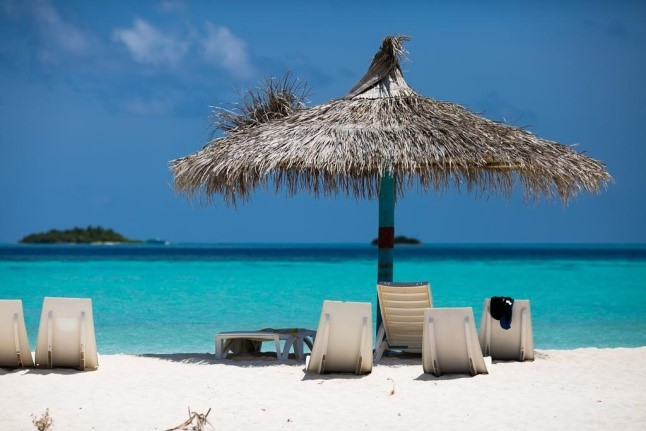
Triton Beach Hotel & Spa is located in Maafushi in the Kaafu Atoll Region, 16 mi from Male City. The guest house has a barbecue and water sports facilities, and guests can enjoy a meal at the restaurant. Bikes are available for guests to use at the property. The area is popular for snorkeling. The nearest airport is Male International Airport, 17 mi from Triton Beach Hotel & Spa
Bliss Dhigurah is located on Dhigurah, one of the most beautiful islands in the Maldives. The hotel has a hot tub and fitness center, and guests can enjoy a meal at the restaurant. This hotel has water sports facilities and bike hire is available. You can engage in various activities, such as diving, fishing and canoeing
• Room Categories – Twin room, Compact room, Deluxe room, Suite room, Family room
• Facilities - Airport shuttle, Free WiFi, Beachfront, Private beach area
Athiri Beach Resort - Dhigurah, Maldives
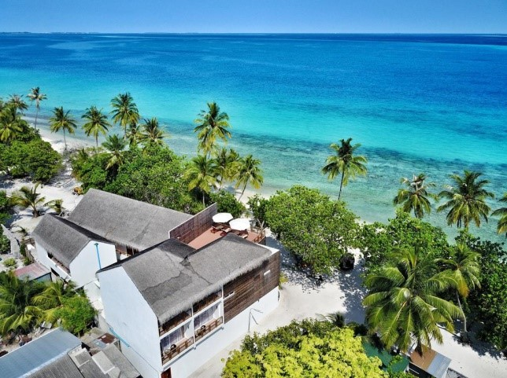
Athiri Beach, the unique boutique guest house in South Ari Atoll & it is located on the local island Dhigurah in South Ari Atoll, Maldives. Dhigurah is about 54 miles away from the capital city and airport of MaleWith sixteen modern and spacious rooms over two floors, Athiri Beach will offer you an exclusive experience in the Maldives.
• Room Categories – Double Room with Balcony and Sea View, Double Room with Terrace and Sea View
• Facilities - Airport shuttle, Free WiFi, Beachfront, cable tv, safe, mini bar
Paradise Island Resort - Lankanfinolhu North, Maldives
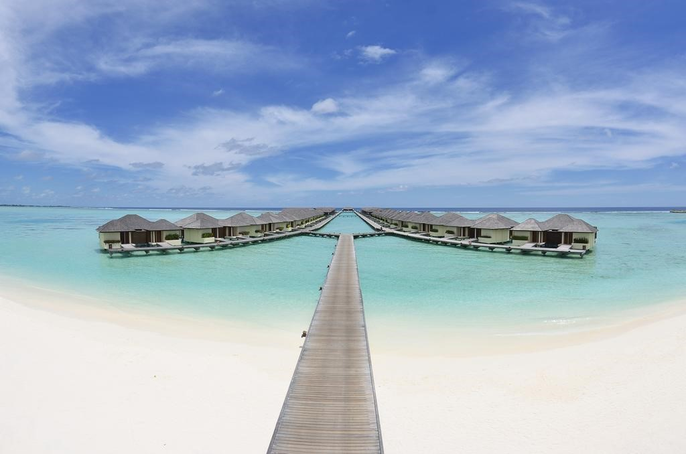
Paradise Island Resort is situated in North Malé Atoll just a 15-minute boat ride from Velana International Airport. Paradise Island Resort & Spa offers private villas and bungalows on an idyllic island in the Indian Ocean. The resort features an outdoor pool, 4 restaurants and a spa.
• Room Categories – Garden Villa, Superior Beach Bungalow, Water Villa, Jacuzzi Water Villa, Lagoon Suite, Ocean Suite
• Facilities - Airport shuttle, Free WiFi, Beachfront, cable tv, safe, mini bar
Sun Island Resort & Spa - Maamigili, Maldives
Sun Island Resort & Spa is a 17-minute domestic flight (wheeled aircraft) from Male International Airport. A mandatory transfer is provided by the resort, and charges are to be paid upon arrival. The luxurious Sun Island Resort & Spa features 9 dining options, an outdoor swimming pool. For adventure seekers, the property offer mornings and sunset fishing as well as big game fishing options alongside excursions, island hopping, and seaplane rides. Araamu Spa offers Ayurvedic, body, and facial treatments. A number of shops and boutiques at the heart of the island provide a selection of holiday essentials, luxuries and mementos.
• Room Categories – Sun Villa, Standard Beach Bungalow, Superior Beach Bungalow, Sun Set Villa, Beach Pool Villa, Water Bungalow
• Facilities - Airport shuttle, Free WiFi, Beachfront, cable tv, safe, bar,2 swimming pools, Spa & wellness center, Fitness center, Private Beach
Cinnamon Dhonveli - Malé, Maldives
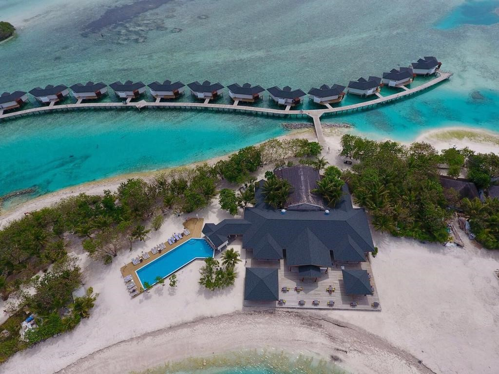
Cinnamon Dhonveli Maldives - Water Suites is situated in Male City. Hulhumale Ferry Terminal is 18 km from Cinnamon Dhonveli Maldives - Water Suites, while Republic Square is 18 km away. The nearest airport is Male International Airport, 17 km from the property. The resort has a spa centre and a private beach area, and guests can enjoy a drink at the bar.
• Room Categories – Over water Suit, Junior Beach Suit, Beach Suite with Pool, Duplex Garden Bungalow, Water Bungalow, Beach Bungalow, Superior room Ocean View
• Facilities - Airport shuttle, Free WiFi, Beachfront, cable tv, safe, bar,1 swimming pool
Bandos Maldives - Malé, Maldives
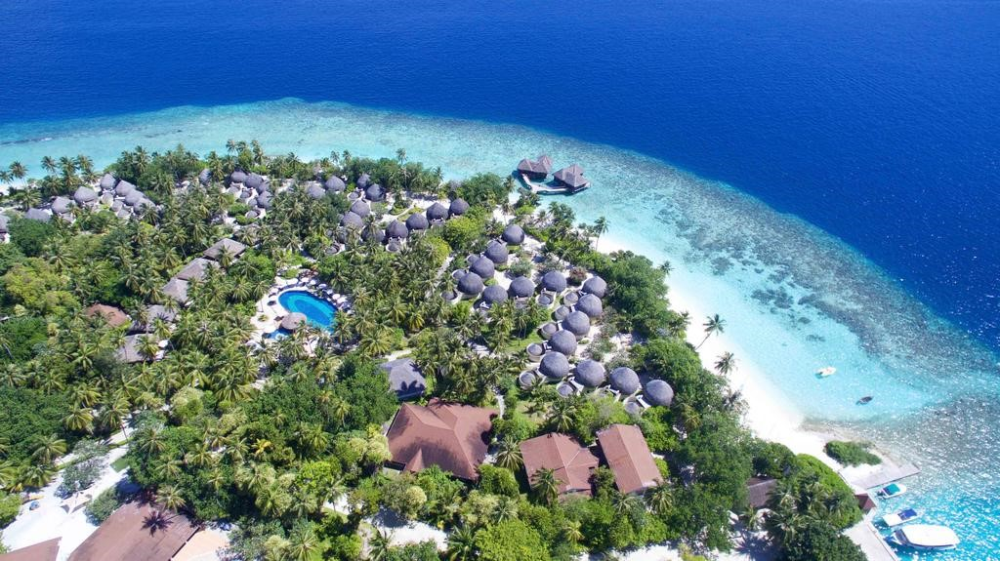
In the middle of the Indian Ocean sits the island of Bandos. Resort is a private island located 8 Km away from Male. Bandos Resort is ideally situated on North Male' Atoll, just a 10-minute speed boat ride from Male International Airport, which is 7 Km away. A picture perfect paradise hidden away from life's everyday stresses. The clear blue water, vibrant plant life and white sandy beaches create an immediate feeling of tranquility. Bandos Maldives features spacious rooms with balconies overlooking the garden or beach. A water sports centre and dive school are available. The hotel has multiple dining options.
• Room Categories – Standard Room, Deluxe Room, Garden Villa, Beach Villa, Superior Beach Villa
• Facilities - Airport shuttle, Free WiFi, Beachfront, cable tv, safe, bar,1 swimming pool
Adaran Select Huduran Fushi - Malé, Maldives
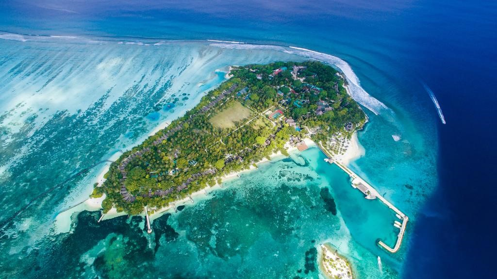
Adaaran Select Huduran Fushi - Premium All Inclusive is about 19 km from Male International Airport. From there, it is 30 minutes by speedboat to the island. Among its facilities there are an outdoor pool and a tennis court. Fully air-conditioned, the private beach and over-water villas come with a cable/satellite TV and minibar. En suite bathrooms have an outdoor rain shower and hairdryer
Holiday Inn Resort Kandooma is a 40-minute speedboat ride from Malé International Airport. It is surrounded by world-class diving and surfing sites. Designed with white-washed timber and large windows, the spacious villas are equipped with a flat-screen satellite TV and luxurious outdoor showers. A tea/coffee maker and safe are provided. Some villas are located over water. Fresh local seafood is served at The Kitchen Restaurant, which offers breathtaking sunset views. The newly refurbished Kandooma Cafe features Western and Asian meals and provides indoor and outdoor seating.
• Room Categories – Garden Villa, Beach Villa, Deluxe Beach Villa, Family Beach Villa, Sunrise Ocean Villa, Sunset Ocean Villa
• Facilities - Airport shuttle, Free WiFi, Beachfront, cable tv, safe, bar,2 swimming pools, Spa and wellness centre,good fitness centre, private beach area
Centara Ras Fushi - Boduthakurufaanu Magu, Maldives (Adults Only Resot)
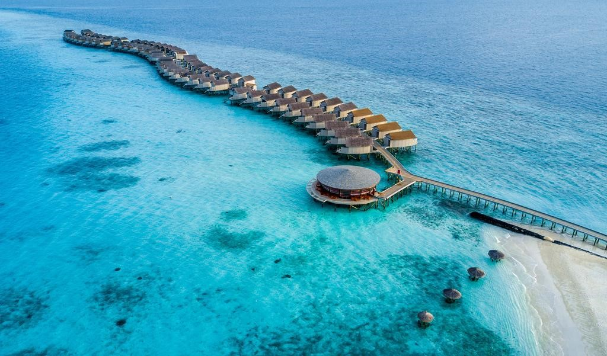
Centara Ras Fushi Resort & Spa Maldives is a 10-minute dhoni boat ride from Giraavaru Cave and Kuda Haa. Kiki Reef, Lion's Head and Shark Point are a 20-minute boat ride away. By speedboat, it is a 15-minute journey from Male International Airport. The adult only Centara Ras Fushi Resort & Spa Maldives offers luxurious beach and over-water accommodation for adults in the exclusive North Male Atoll. An ocean-front spa, a PADI-certified dive centre and an outdoor pool are available. Besides 24-hour room service, there are also 6 on-site bars and restaurants serving Thai, Italian and International cuisines.
• Room Categories – Ocean Front Beach Villa, Deluxe Ocean Front Beach Villa, Deluxe Water Villa, Deluxe Sunset Water Villa, Deluxe Spa Over Water Villa, Premium Deluxe Spa Over Water Villa
• Facilities - Airport shuttle, Free WiFi, Beachfront, cable tv, safe, bar,2 swimming pools, Spa and wellness centre,good fitness centre, private beach area
Royal Island Resort & Spa - Dharavandhoo, Maldives
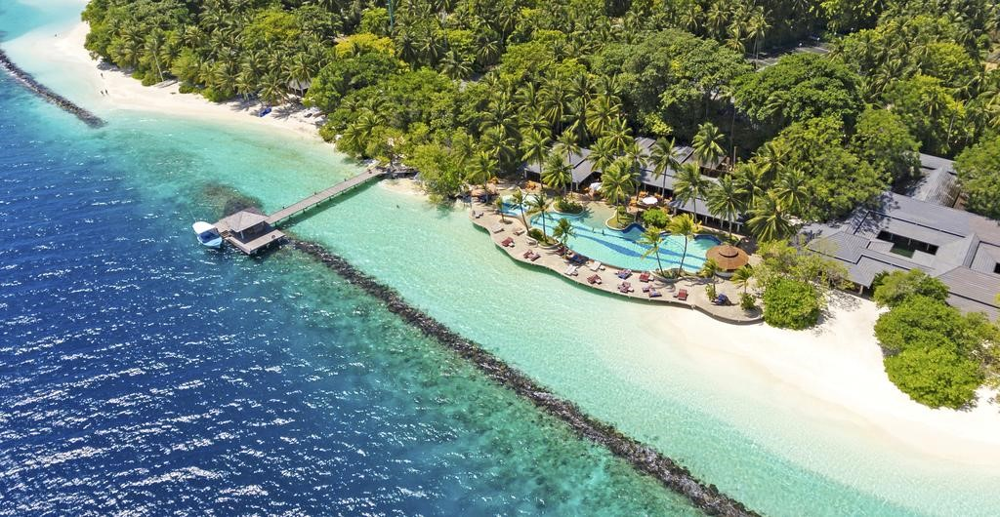
The Royal Island Resort & Spa is a 30-minute wheeled aircraft ride from Malé International Airport. A mandatory transfer is provided by the resort, and charges are to be paid upon arrival. Royal Island Resort & Spa is located in Maldives’ Baa Atoll. This tropical Island overlooks the Indian Ocean and guests can enjoy diving trips and sunset cruises. Those looking for more adventurous sports can try water skiing or kite surfing. Other recreational facilities include an outdoor pool, gym and tennis courts.
• Room Categories – Presidential Suite, Beach Villa. Garden Villa
• Facilities - Airport shuttle, Free WiFi, Beachfront, cable tv, safe, bar,1 swimming pool, Spa and wellness center, good fitness center, private beach area
Adaaran Prestige Vadoo (Book on All Inclusive Basis)
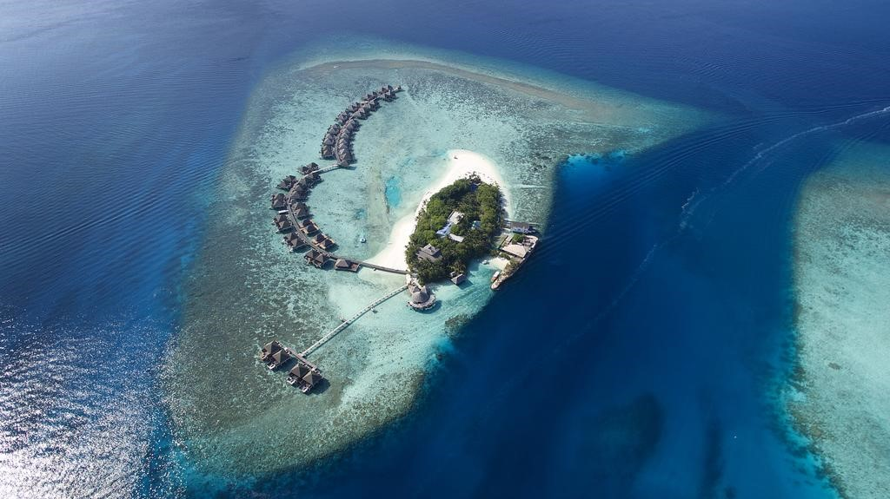
Adaaran Prestige Vadoo is 8 km from Malé International Airport, which is about 15 minutes by speedboat. Adaaran Prestige Vadoo offers water villas with a private plunge pool and a glass-bottomed bathroom lounge with view of marine life. Guests of Adaaran Prestige Vadoo can take a dip in the outdoor pool or go for an in-room spa treatment. Activities to do include diving, snorkelling, fishing or table tennis.
• Room Categories – Sun Rise Water Villa, Sun Set Water Villa, Honeymoon Villa
• Facilities - Airport shuttle, Free WiFi, cable tv, safe, bar,1 swimming pool, Spa and wellness center, good fitness center, private beach area
Conrad Maldives Rangali Island
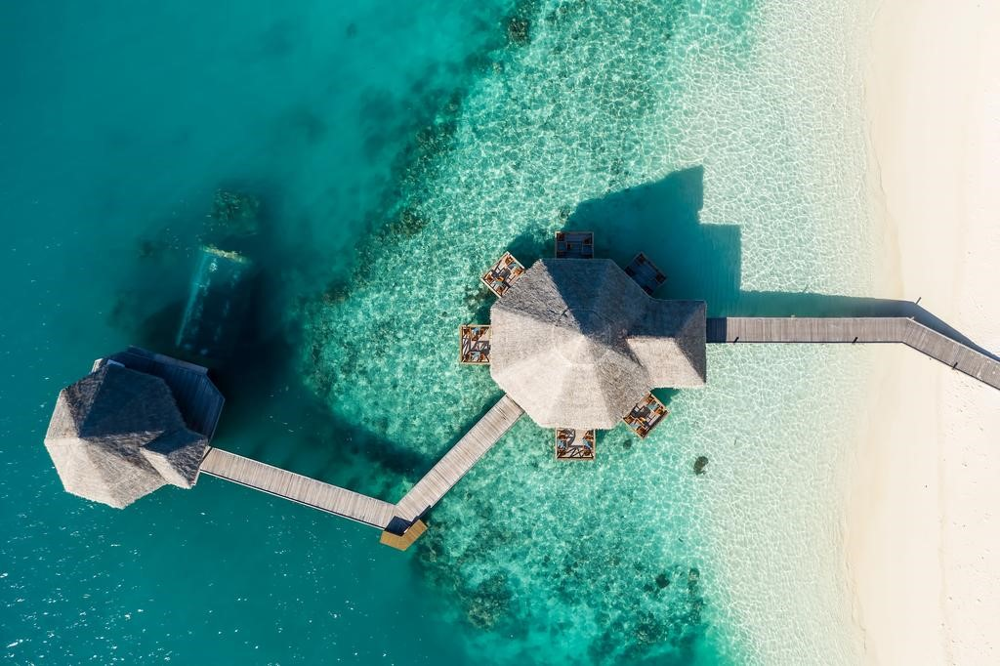
Conrad Maldives Rangali Island is reachable via a 30-minute scenic seaplane transfer from Male International Airport. Set on 2 separate islands connected by a bridge, the luxurious Conrad Maldives Rangali Island offers spacious private villas. It boasts the all-glass underwater Ithaa Restaurant and 2 award-winning spas. Total relaxation can be enjoyed at the lagoon Spa Retreat and Over-Water Spa. Guests may make their stays extra rewarding by visiting the on-site Italian boutique, or learning about local culture on a day trip to one of the surrounding islands.
• Room Categories – Beach Villa, Deluxe Beach Villa, Beach Suite, Water Villa, Superior Water Villa, Deluxe Water Villa, Greand Water Villa with Jacuzzi, Premier Water Villa, Sun Set Water Villa
• Facilities - Airport shuttle, Free WiFi, cable tv, safe, bar,03 swimming pools, Spa and wellness center, good fitness center, private beach area
Dusit Thani Maldives (Book on All Inclusive Basis)
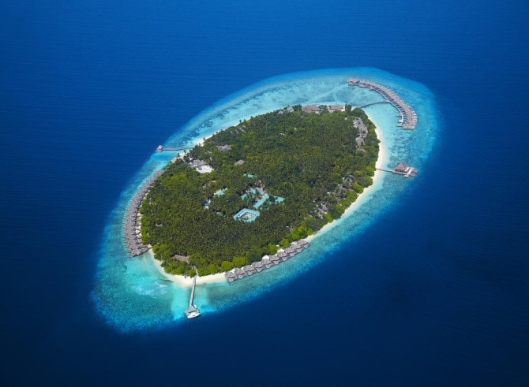
Dusit Thani Maldives is a 35-minute seaplane journey from Male International Airport or a 25-minute domestic flight to Dharavandhoo Domestic Airport followed by a 10-minute speedboat ride to the resort. The luxurious Dusit Thani Maldives offers 94 Villas and Residences, located in Baa Atoll, the Maldives’ first and only UNESCO Biosphere Reserve. It features one of Maldives’ largest infinity pools, surrounded by beautiful coral reefs and a turquoise lagoon. With a private beachfront, tree-top spa and free WiFi in rooms, it offers a 360 degree house reef surrounding the island.
• Room Categories – Beach Villa, Beach Villa with Pool, Beach Deluxe Villa with Pool, Water Villa with Pool, Ocean Villa with Pool, Two Bed Room Ocean Pavilion, Two Bed Room Family Beach Villa, Two Bed Room Beach Residence, Three Bed Room Beach Residence
• Facilities - Airport shuttle, Free WiFi, cable tv, safe, bar,01 swimming pool, Spa and wellness center, good fitness center, private beach area, Beach front